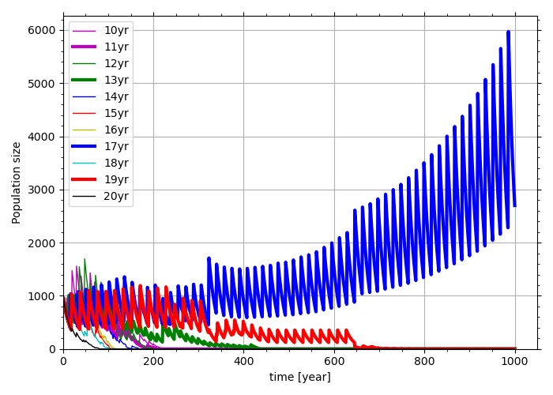
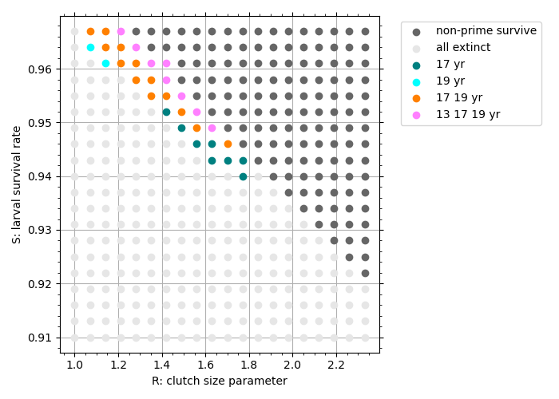
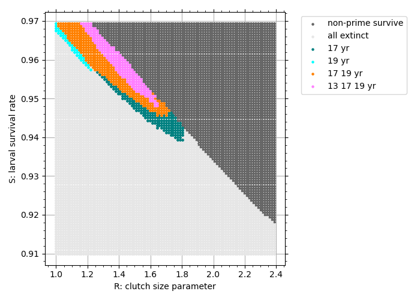
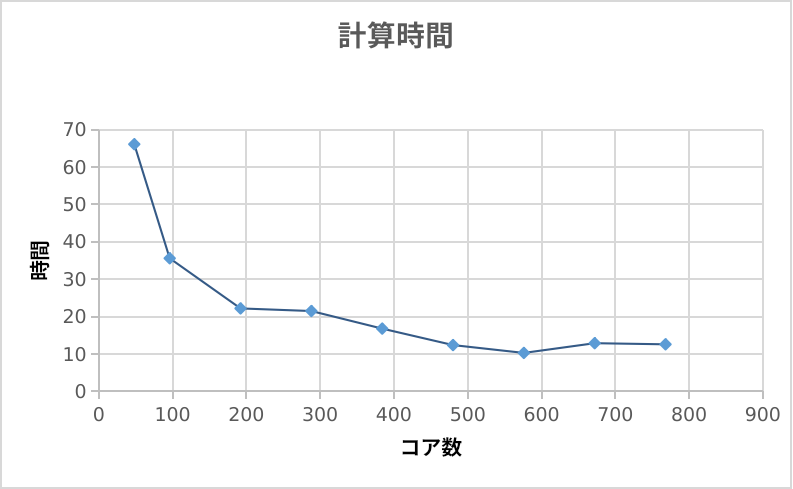

スパコン体験塾は高度情報科学技術研究機構（RIST）が主催するイベントで、 参加者がスパコン「富岳」を使いながら与えられた課題を解くという内容だ。 夏休み中の8/25,26にオンラインで行われた。 物理部から5人参加したため、その記録を書こうと思う。
学校のコンピューター室で行われたスパコン体験塾の様子は、六甲学院公式Twitterにも掲載されている。
くま先輩「昨日と本日、コンピューター教室にて、スーパーコンピューター“富岳“をリモートで動かそう！ という企画が動いています！
— 六甲学院 公式「くま先輩の日誌」 (@rokko_info) August 26, 2021
ろ、六甲からそんなことが？ 六甲生有志が参加、見事スパコンとコンタクト！ “こいつ、動くぞ！“」 #六甲学院 pic.twitter.com/gZeXoeYfoc
素数ゼミが生き残る過程をシミュレーションするのが今回の課題だった。 以下に問題を要約して掲載する。（元の課題の問題文の著作権はRISTにあります。）
周期$i$年と周期$j$年の遺伝子をペアとして持つ遺伝型を$[i,j]$と表す。 仮定1より、$[i,j]$と$[m,n]$が交配した場合、$[i,m],[i,n],[j,m],[j,n]$の4種類が等確率で生まれる。 周期が短い遺伝子のほうが顕性であると仮定する。つまり、$i < j$のとき、遺伝型$[i,j]$の表現型は周期$i$年となる。
シミュレーションはある年にある一つの周期の遺伝子を持つ10-20年ゼミがそれぞれ同数ずつ産み落とされたところから開始する。 セミは毎年一定の割合$S$で生き残り、成年になる年（出現年）には割合$E$のみが成虫として出現し繁殖に関わる。 遺伝型$[i,j]$の幼虫の$t$年における数を$N_{L,t}(i,j)$とすると、それは毎年、次の式に従って変化する。 $$N_{L,t}(i,j)=S \times N_{L,t-1}(i,j) \tag{1}$$ また、出現年において成虫になる個体の数は以下のように表す。 $$N_{A,t}(i,j)=E \times N_{L,t}(i,j) \tag{2}$$ この成虫全てが繁殖に関わって子孫を残し、その直後に寿命を終える（$N_{A,t}(i,j)=0$）こととする。
この計算モデルにおいて、仮定3より式(1),(2)においてブルードの絶滅が起こり得る。個体数が1以上の場合も、小数点以下が切り捨てられることによって個体数の減少が早まる効果がある。
出現年には仮定2によってランダムな交配が起こる。各ブルードにおいて雌雄の数が半々であるとし、1匹の雌が産む卵の数が $$C(y)=R \times y$$ のように雌の周期$y$に比例すると仮定すると、遺伝型$[i,j]$の雌と$[m,n]$の雄との交配による子孫の数は以下のように表される。 $$ (\rm{Num.\ offspring})=\frac{1}{2} N_{A,t}(i,j) \times F(N_{A,t}(m,n)) \times C(y) \tag{3} $$ $\frac{1}{2}$となっているのは成虫の半分が雌であることによる。 ただし、$F$は出現年においてある遺伝子型を持つブルードの割合で、 $$ F(N_{A,t}(m,n))=N_{A,t}(m,n)/\sum_{m,n}N_{A,t}(m,n) $$ と表される。
式(3)の遺伝子型$[i,j]$の雌と$[m,n]$の雄の交配においては、4つの遺伝型の子孫が等確率で生まれるため、それぞれの個体数は式(3)に$1/4$をかけた以下の式によって求められる。 $$ (\rm{Num.\ offspring\ by\ genotype})=\frac{1}{8} N_{A,t}(i,j) \times F(N_{A,t}(m,n)) \times C(y) $$
プログラムを書いてスパコン「富岳」上で試行錯誤しながら解いた。
 $S=0.945,\ E=0,2,\ R=1.63$のとき、17年ゼミのみが生き残り、その他の周期のセミが死滅する。
 色がついているところが素数ゼミのみが生き残るパラメタ$S,R$の設定である。
 これは問2のパラメタをより細かく分割したものだ。並列計算をすることにより計算量の大きな増加にも関わらず、高速に実行できた。
プログラミング言語にはC言語、並列計算にはMPIを使用した。MPI（Message Passing Interface）はプロセス並列の並列計算の枠組みだ。
1日目に課題1を解いていたが、バグが発生しその日に問1を終わらせることができなかった。 しかし、帰りの電車の中でふと原因を思いつき次の日にすぐに解決できた。 （ちなみに、原因は配列のインデックスの指定間違いと、double型とint型を変換する工程を行う位置が間違っていたことだった。） 問1が解けたあとは、スムーズに問2が解けた。 問3の並列計算についても苦労したが、一昨年のスパコン体験塾でも並列計算プログラムの書き方を教わっていたためなんとか完成させることができた。
富岳の凄さはなんといっても、そのCPUコアの多さだ。1ノード48コアで、158,976ノードあるそうだ。158,976✕48で7,630,848コアという計算になる。 私は通常1ノード、計算する時だけ最大で16ノード使わせて頂いた。
時間が余ったので、並列計算のコア数と計算時間の関係を調べた。 結果は、以下の図のようになった。

図には載せていないが、1コアで計算した場合、2808秒（約46分）かかった。
最大で768コア使った。私が普段使っているパソコンは4コアだ。 個人で買える中で最もコア数が多いと思われるAMD Ryzen Threadripper（50万円くらい？）でも64コアである。 このことからも「富岳」の規模の大きさが分かる。
図を見ると、576コアを使った時に計算時間が最短となっている。それ以上計算に使うコア数を増やしても速度が向上しないのは、ファイル書き込みなどがボトルネックとなっているためだ。 このプログラムにおいて、768コアはオーバースペックだった。
スパコン「富岳」を使う機会を提供してくださったRISTの方々に感謝します。ありがとうございました。
Tweet #六甲学院物理部2021